¶ Задание
¶ 10. Настройте инфраструктуру разрешения доменных имён для офисов HQ и BR:
- Основной DNS-сервер реализован на HQ-SRV
- Сервер должен обеспечивать разрешение имён в сетевые адреса устройств и обратно в соответствии с таблицей 3
- В качестве DNS сервера пересылки используйте любой общедоступный DNS сервер(77.88.8.7, 77.88.8.3 или другие)
¶ Реализация
¶ 10.1 Установка и настройка BIND на HQ-SRV
Устанавливаем DNS-сервер bind
Редактируем конфигурационный файл /var/named.conf
В данном файле необходимо изменить следующие строки, содержащие
listen-on port 53;listen-on-v6 port 53;allow-query;forwarders;dnssec-validation
Приводим конфигурационный named.conf к следующему виду
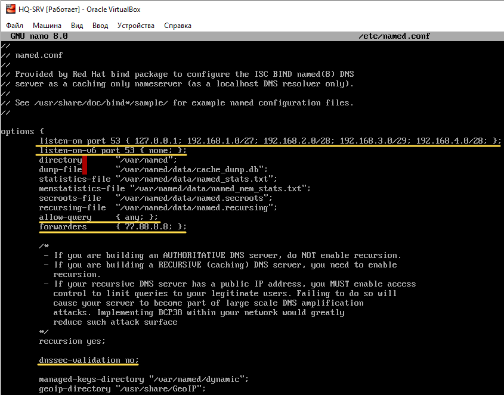
где:
listen-on port 53 { 127.0.0.1; 192.168.1.0/27; 192.168.2.0/28; 192.168.3.0/29; 192.168.4.0/28 };— IP-сети DNS-сервера, на котором он будет принимать запросы; (можно прописать any - слушать везде)listen-on-v6 port 53присвоим значениеnone, тем самым отключив IPv6allow-queryразрешает выполнять запросы всем, но из соображений безопасности можно ограничить доступ для конкретной сети.forwardersперенаправляем запросы, которые сами не резолвим, на DNS сервер Яндекса.
Объявляем файлы зон
Дописываем в конец файла /var/named.conf следующие строки
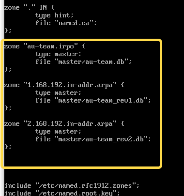
где:
Прямая зона
zone "au-team.irpo"{ ... };определения зоны au-team.irpo. В кавычках указывается имя зоны, которое следует разрешать на этом сервере.type master;Указывает тип зоны. type master означает, что эта зона является мастер-зоной, то есть она содержит авторитетные записи, которые могут быть изменены и обновлены на этом сервере.file "au-team.db";Указывает путь к файлу, который содержит данные зоны au-team.irpo. Файлы зоны используются для хранения записей DNS, таких как A-записи, CNAME-записи, MX-записи и т. д.Обратная зона
zone "1.168.192.in-addr.arpa"{ ... };определения обратной зоны au-team.irpo для VLAN100file "au-team_rev1.db";Указывает путь к файлу обратной зоны, который содержит данные обратной зоны au-team.irpo VLAN100.zone "2.168.192.in-addr.arpa"{ ... };определения обратной зоны au-team.irpo для VLAN200file "au-team_rev2.db";Указывает путь к файлу обратной зоны, который содержит данные обратной зоны au-team.irpo VLAM200.
С помощью утилиты named-checkconf проверяется наличие ошибок в конфигурационном файле командой:
Если результат выполнения команды пуст - ошибок нет.
¶ 10.2 Создание локальных зон DNS
Создаем папку с мастер зонами:
Зона прямого просмотра
Для сокращения времени написания файла прямой зоны (au-team.db) скопируем шаблон и отредактируем его
Открываем на редактирование файл зоны au-team.db
И приводим его к следующему виду
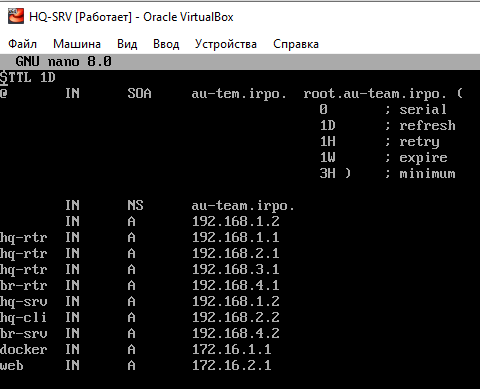
Зоны обратного просмотра
Для сокращения времени написания файлов обратных зон скопируем шаблон и отредактируем его
Открываем на редактирование файл зоны au-team_rev1.db
И приводим его к следующему виду
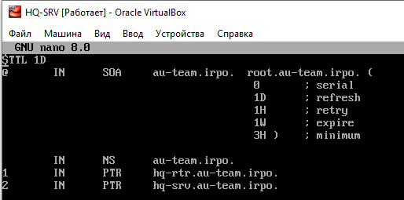
Создаем копию au-team_rev1.db с именем au-team_rev2.db
Открываем на редактирование файл зоны au-team_rev2.db
И приводим его к следующему виду
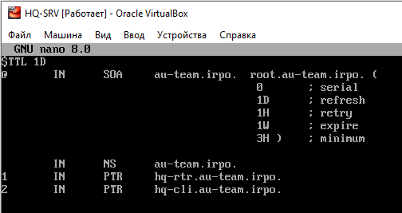
Назначаем владельца и права на файлы зон
С помощью утилиты named-checkconf -z проверяем наличие ошибок в конфигурационном файле и файлах зон.
Если все настроено вено, должны увидеть примерно следующее
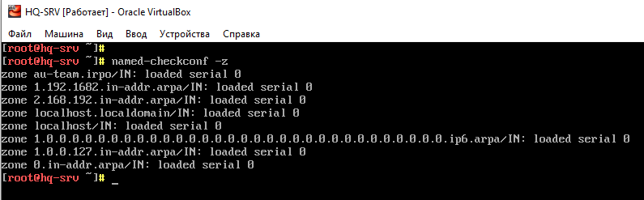
На HQ-SRV в настройках сетевого интерфейса устанавливаем, в качестве первичного DNS сервера собственный IP – адрес
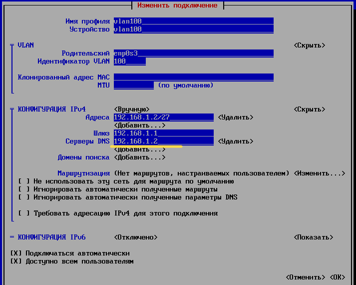
На BR-SRV в качестве первичного DNS сервера указываем IP – адрес HQ-SRV
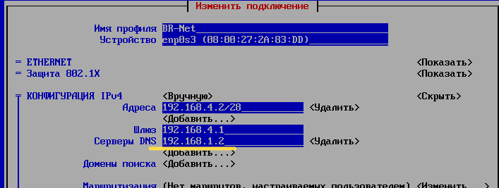
HQ-CLIадресDNSсервера получает поDHCP
Запуск и добавление в автозагрузку DNS - сервера:
¶ 10.3 Тестирование
Проверяем работу DNS с BR-SRV с помощью команды ping
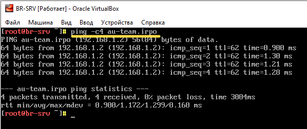
С помощью утилиты host проверяем записи типа A с HQ-CLI
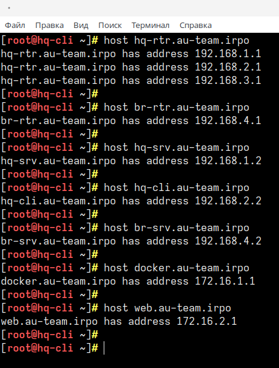
С помощью утилиты host проверяем записи типа PTR с HQ-CLI
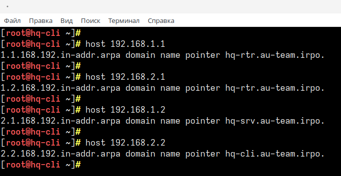